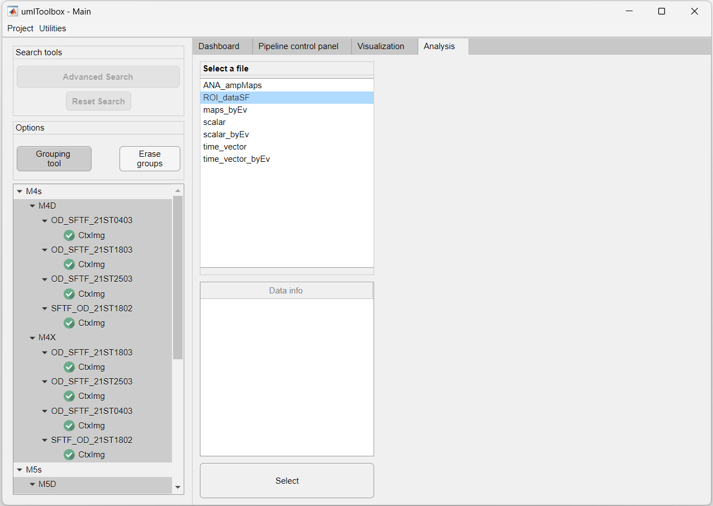
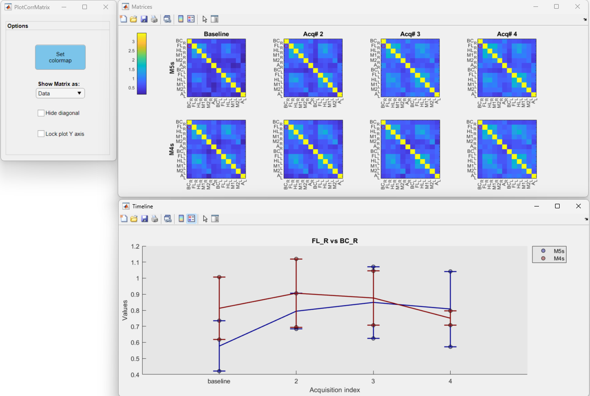

Up to this point, you learned how to import, preprocess, extract and aggregate data from imaging datasets separated by experimental groups. In this tutorial, we show how to visualize this data. The visualization of grouped data allows one to perform the exploratory data analysis of a given project.
In this tutorial, we will visualize the data used in the previous section about ROI data extraction and aggregation. In brief, it consists of four resting state and four visual stimulation experiments performed in four mice divided into two experimental groups.
In this section, we will visualize the response of visual areas to drifting gratings. The data consists of the average response amplitudes to 10 repetitions of the visual stimulus resulting in one value (scalar) per ROI (i.e., ROI response amplitude values). Below is a summary of the data processing workflow for one recording:
1. First open your project file in the main GUI. In Matlab's command window, type:
umIToolbox('C:/FOLDER/projectfile.mat');
2. In the Analysis tab, use the Grouping tool option to create or load the grouped data (for more information, revisit our tutorial on how to create groups). Here, we will group all drifting grating recordings into two groups: M4s and M5s:

3. Now, highlight all recordings in the object tree and select the file named ROI_dataSF containing the ROI response amplitude values.
4. Click on the Select button to load the data.
5. Now the Apps & tools panel is visible. Here, you can use the different tools in the Utilities panel to save, export or edit the loaded data. For more information on each tool, please refer to the Analysis tab documentation.
6. In this example, we will visualize the visual response amplitudes of each observation (i.e. ROIs) by clicking on the Line/Box plots button. This app is dedicated to the visualization of scalar (i.e. single value) or time-series (1 x N frames) datasets. Here is a snapshot of the app:
5. Finally, click on the Line/Box plots to open the tool and explore your data!
The image above shows the interface of the plotting tool. It consists of a main window (left) containing options to set several axis parameters, a main plot window (center) showing the selected ROI and one or more summary figures (right) containing the plots of all ROIs. Click here to learn more about the Line/Box plot app.
In the previous section, we showed how to observe single values (scalar) from ROIs across acquisitions. Here, we show how to visualize averaged functional connectivity data. Here is the data processing workflow for the resting state experiments:

1. As the steps 1 to 3 of the previous section, open the main GUI, group the resting state recordings and select the file containing the data. Here, we will select the file corrMatrix_avg_vs_avg which contains the correlation values between the averaged correlation values of all pixels inside each ROI:

2. Click on the Select button to load the data:
3. Now, we will create a subset of observations (ROIs) to visualize as the correlation matrix and regroup the ROIs as left and right hemispheres. To do so, we will use the Change lists utility:
4. Launch the Plot Correlation Matrix app. Here is a screenshot of the correlation matrix plotting app:
You can click on any region of a correlation matrix (top) to show the temporal profile (bottom) of the correlation between pairs of ROIs. Click here to learn more about the Plot Correlation Matrix app.